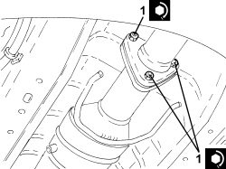

1076B12 EXHAUST PIPE ASSEMBLY R R
- Path
- Procedures > 10 ENGINE > 1076 EXHAUST PIPES AND SILENCERS > 1076B EXHAUST PIPES AND SILENCERS > 1076B12 EXHAUST PIPE ASSEMBLY R R
- Kind
- repair procedure (removal / refitting; the operation number is the code)
- Applies to
- engines: 2.2 JTS, 2.4 JTD 20v; all production periods
- Interactive page
- https://sloeber94.github.io/elrnDB-aBrrSpdr/en/#/946001957
Applies to: engines: 2.2 JTS; all production periods
 Removing
Removing
 Refitting
RefittingOp. 1076B22 REAR EXHAUST SILENCERS - LEFT OR RIGHT - R.R.
Op. 1076B30 FRONT EXHAUST SILENCER - R + R
Op. 1076B72 INTERMEDIATE EXHAUST PIPE WITH HOSE SECTION - R+R
Applies to: engines: 2.2 JTS; all production periods
Refitting
RemovingOp. 1076B72 INTERMEDIATE EXHAUST PIPE WITH HOSE SECTION - R+R
Applies to: engines: 2.4 JTD 20v; all production periods
Removing
Refitting- Position the vehicle on a lift.
Op. 7055B54 UNDER ENGINE PROTECTION/GUARD - R.R.
1. Undo the bolts (1a) and the nuts (1b) and remove the particle filter mounting bracket (1c).

Applies to: engines: 2.4 JTD 20v; all production periods
1. Loosen the bands and disconnect the flexible pipes from the rigid pipes for the particle filter differential pressure sensor.

Applies to: engines: 2.4 JTD 20v; all production periods
1. Undo the exhaust gas temperature sensor on the particle filter and remove it.

Applies to: engines: 2.4 JTD 20v; all production periods
1. Undo the nuts fixing the intermediate exhaust pipe to the particle filter.

Applies to: engines: 2.4 JTD 20v; all production periods
1. Position a hydraulic jack (1a) equipped with a suitable tool (1b) for supporting the particle filter.
2. Release the flexible mountings and remove the exhaust pipe assembly.

Applies to: engines: 2.4 JTD 20v; all production periods
Refitting
Removing- Place the exhaust pipe assembly in its housing and secure it to the flexible mountings.
- Remove the hydraulic jack fitted with the suitable tool used for supporting the particle filter.
1. Tighten the nuts fixing the intermediate exhaust pipe to the particle filter to the recommended torque.
Component | Fastening | dia | Value (daNm) | Validity |
|---|---|---|---|---|
Intermediate exhaust pipe with flexible section - particulate filter side | Nut | M8 | 2.2 ÷ 2.6 | 2.4 JTD 20V |

Applies to: engines: 2.4 JTD 20v; all production periods
1. Place the exhaust gas temperature sensor in its housing on the particle filter and tighten it to the recommended torque.
Component | Fastening | dia | Value (daNm) | Validity |
|---|---|---|---|---|
Exhaust gas temperature sensor on particle filter | - | M14 | 4.5 | 2.4 JTD 20v |

Applies to: engines: 2.4 JTD 20v; all production periods
- Connect the flexible pipes to the rigid pipes for the particle filter differential pressure sensor and tighten the bands.
- Place the particulate oil filter bracket in its housing and secure it using the nuts and bolts.
Op. 7055B54 UNDER ENGINE PROTECTION/GUARD - R.R.
- Remove the vehicle from the lift.
Topics linked from this page (4)
- 1076B22 REAR EXHAUST SILENCERS - LEFT OR RIGHT - R.R.
- 1076B30 FRONT EXHAUST SILENCER - R + R
- 1076B72 INTERMEDIATE EXHAUST PIPE WITH HOSE SECTION - R+R
- 7055B54 UNDER ENGINE PROTECTION/GUARD - R.R.